This document submits the Product Management module of ShopSphere, a multi-vendor e-commerce website, with its code repository, hosted link, requirement checklist and user guide.
| Item | Details |
|---|---|
| Candidate | Anil Nayak |
| Internship | ITVedant / Vibgyor Advisors integrated internship |
| Project | ShopSphere — multi-vendor e-commerce platform |
| Module | Product Management (Admin console) |
| Frontend | React 19, Vite, React Router, Bootstrap 5 |
| Backend | Java 17, Spring Boot 4, Spring Security (JWT), Spring Data JPA |
| Database | MySQL (database ecommerce_intern, table products) |
Repository: https://github.com/anilnayak9969-cmd/ShopSphere
The repository holds the complete project. Secret settings (database password, JWT secret, email and Razorpay keys, admin access code) are not committed; an example settings file shows what to fill in.
| Folder | Contents |
|---|---|
Backend/ecommerce | Spring Boot API. The module's code is the product endpoints in AdminController, ProductServiceImpl (admin add, update, deactivate, summary), the Product entity, AdminProductRequest, ProductRequest, ProductSummaryResponse and ProductSpecifications (dashboard filters). Tests: ProductServiceImplAdminTest. |
Frontend/ecommerce | React website. The module's admin screens are src/pages/admin/AdminProducts.jsx (product dashboard) and src/pages/admin/AdminProductForm.jsx (add and edit). API calls are in src/services/adminService.js. |
DataBase | catalog_data.sql (sample stores, categories and products) and queries.sql (section 7: Product Management SQL) |
Docs/ProductManagement | This document, its screenshots and the module README |
README.md | Setup steps, features and API reference |
Website: https://host-shop-sphere.vercel.app/
To try the module, sign in with the admin account below and open Admin console → Products.
| Login | Value |
|---|---|
| Admin email | admin@shopsphere.com |
| Admin password | (shared separately with the evaluator) |
Every functionality in the assignment is implemented and was tested in the running application. The table maps each requirement to where it lives in ShopSphere.
| Requirement | How ShopSphere implements it | Status |
|---|---|---|
| 1. Add a new product Only admins; fields name, description, price, category, SKU, inventory count | New product button → Add a new product form with Product name, Description, Price, Category, SKU and Inventory count (plus optional discount, brand and photo). POST /api/admin/products is protected by the ADMIN role, so customers and sellers get HTTP 403. Admin-added products are approved and live straight away. | Implemented |
| 2. Product dashboard View all products; create, update, delete options; stock, price and status | Product management page: summary cards (total, active, inactive, low stock), every product with SKU, store, category, price, stock (low stock in red), Active/Inactive status and last update. Search, category filter, All/Active/Inactive filter and pagination. Each row has Edit and Deactivate/Activate; New product sits at the top. | Implemented |
| 3. Update product details Price, description, inventory count, category | Edit opens the same form filled with the current values. PUT /api/admin/products/{id} saves price, discount, description, inventory count, category, name, SKU, brand and photo. The seller is notified. | Implemented |
| 4. Delete / deactivate product Soft delete with a Boolean status; warning before deactivating | Deactivate sets the Boolean active column to 0 (soft delete); the row is never removed. A warning window first says that deactivating hides the product from the customer interface. Activate brings it back. | Implemented |
| Database design Table products | Every assignment column exists in the products table (two have ShopSphere names: inventory_count → stock_quantity, status → active). See the Appendix. | Implemented |
Product Management lets the ShopSphere administrator keep the store's catalogue up to date: add products, change prices, descriptions, stock and categories, and take products off sale without losing their history.
With this module the admin can:
Who uses it: only users with the Admin role. Customers see a product once it is active and approved and its category is active. Sellers manage only their own products from the Seller studio.
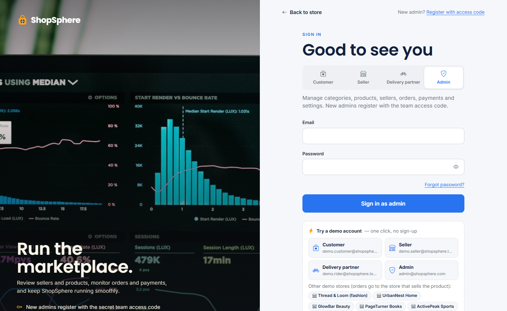
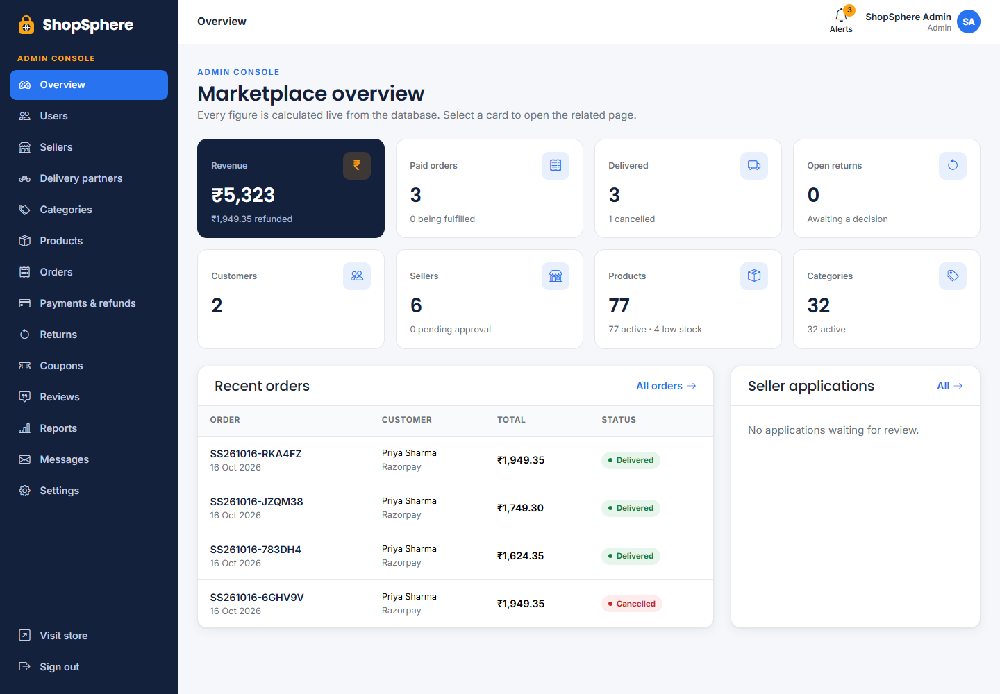
The page opens with four summary cards and the list of all products, newest first.
| Part of the page | What it shows |
|---|---|
| New product button | Opens the Add a new product form (section 4.3) |
| Total products card | Number of products, active and inactive |
| Active card | Products switched on for the store |
| Inactive card | Products that were deactivated (soft deleted, kept for history) |
| Low stock card | Active products with 5 units or fewer (the threshold is set in Admin → Settings), and how many seller products await approval |
| All products / Approval queue / Approved / Rejected | Filter by approval. The approval queue lists products that sellers submitted (section 4.8) |
| All / Active / Inactive buttons | Show only products with that status |
| Search box and category list | Search by name, brand, SKU or category; pick a category (its subcategories are included) |
| Table: Product | Photo, name, SKU and the store that sells it. Live products link to their shop page |
| Table: Category | The product's category; "category inactive" in red if that category was deactivated |
| Table: Price | Price customers pay, with the MRP underneath when there is a discount |
| Table: Stock | Inventory count; shown in red with "low stock" or "out of stock" when it runs low |
| Table: Status | Active or Inactive badge (plus "Awaiting review" or "Rejected" for seller listings) |
| Table: Last updated | Date of the last change |
| Edit / Deactivate / Activate | Actions for each product (sections 4.4, 4.5 and 4.6) |
The list shows 10 products per page; use the page numbers under the table to move between pages.
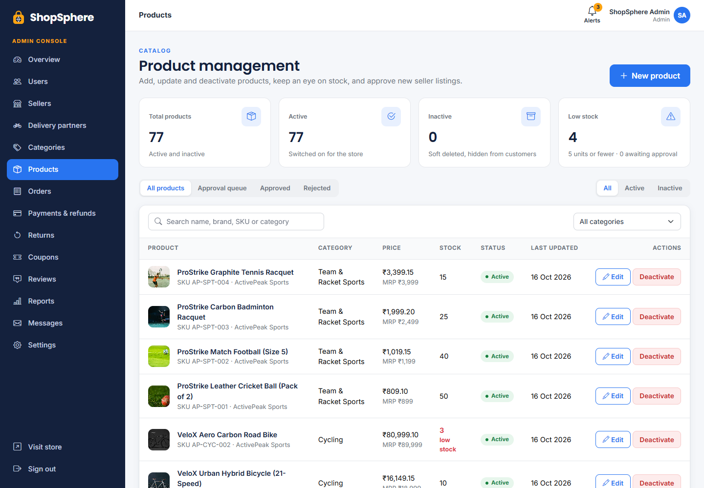
| Field | Required | What to enter |
|---|---|---|
| Sold by (store) | Yes | The approved store that packs and ships the product, e.g. UrbanNest Home |
| Product name | Yes | 2–150 characters, e.g. Nordic Dome Pendant Light (White) |
| Description | Yes | 10–2000 characters. Customers read it on the product page |
| Category | Yes | An active category or subcategory, e.g. Home Décor |
| SKU | Yes | Unique stock code, 3–60 letters, numbers, - or _, e.g. URBN-PEND-001. Saved in capitals |
| Price / MRP (₹) | Yes | At least ₹1, up to 2 decimal places |
| Discount (%) | No | 0–90. The price customers pay is worked out automatically |
| Inventory count | Yes | Units in stock, a whole number from 0 to 100000 |
| Brand | No | Up to 80 characters |
| Main photo | No | Click Upload to choose a JPG, PNG or WEBP image up to 5 MB, or paste an image link starting with https:// |
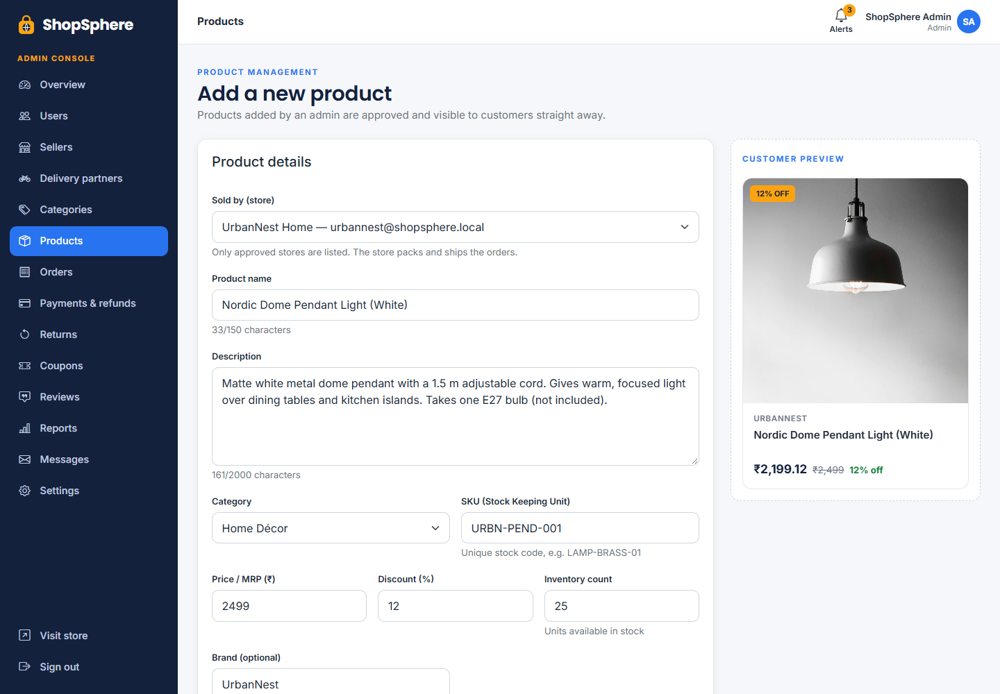
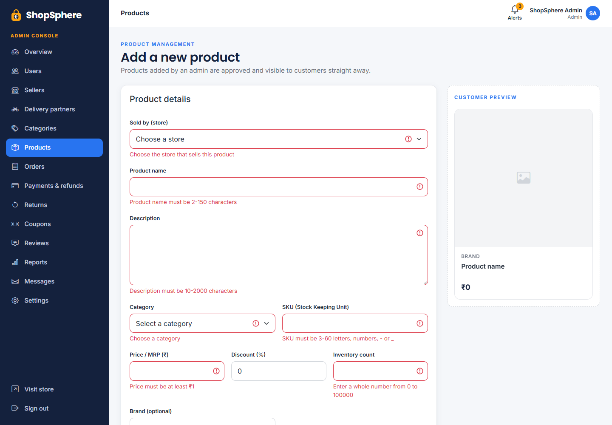
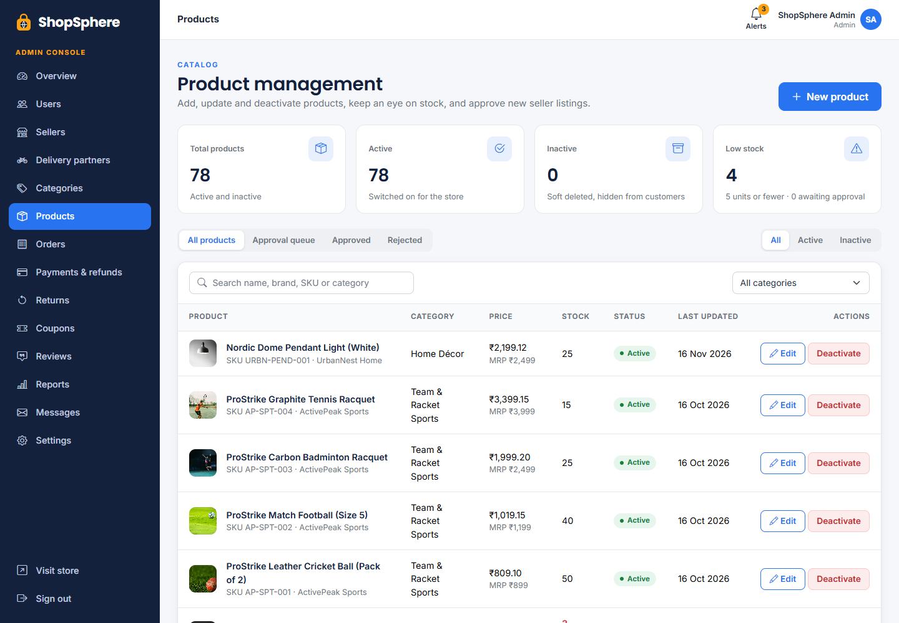
Changes made by an admin go live straight away; they do not send the product back for approval. The product's gallery photos and specifications, which the seller manages, are kept as they are.
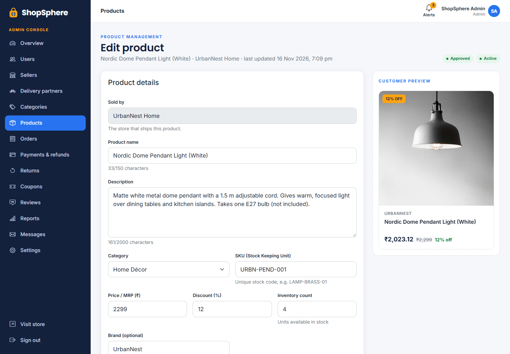
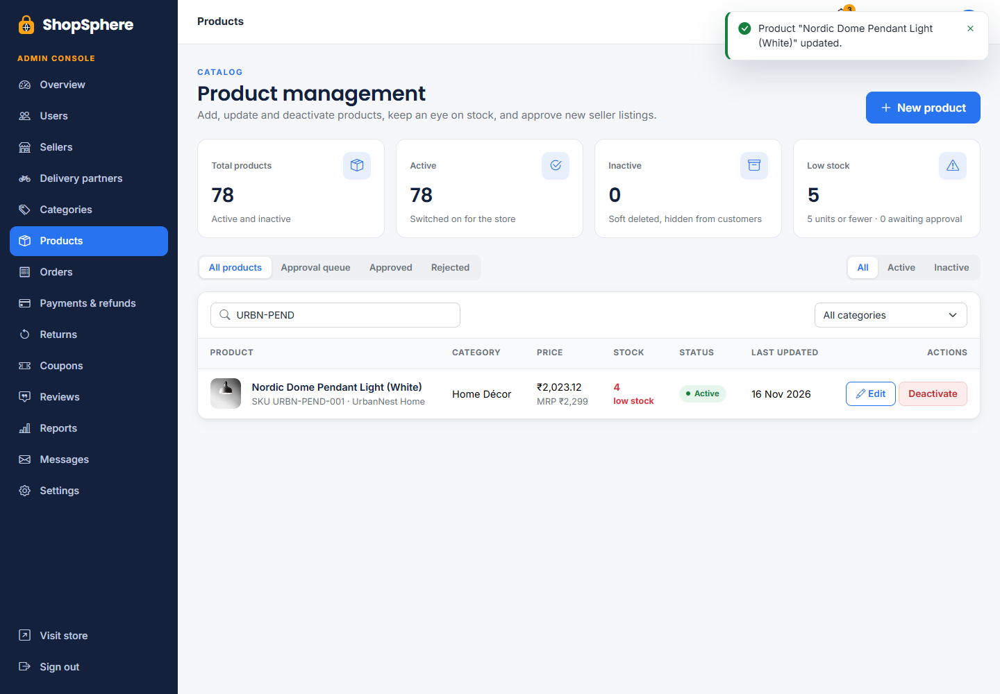
Deactivating is a soft delete: the product's Boolean status column (active) is set to false. The product disappears from the customer interface, but its record stays in the database, so past orders, reviews and reports keep it, and it can be brought back later.
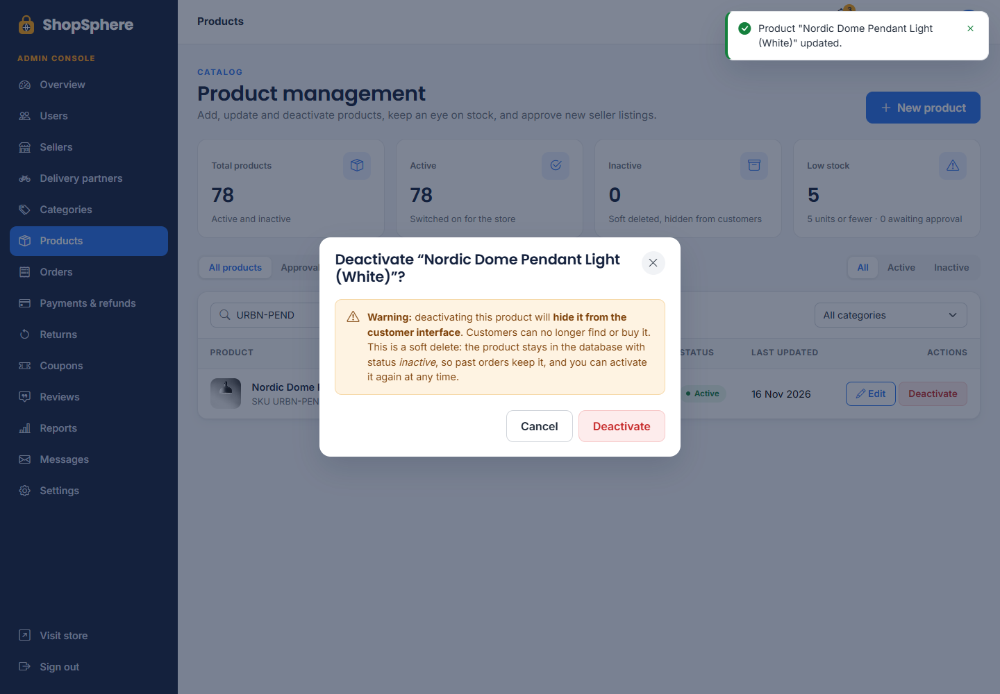
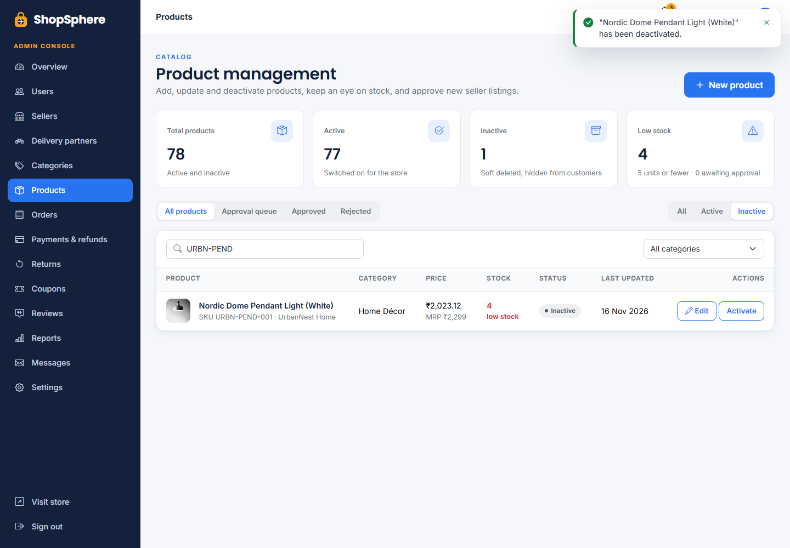
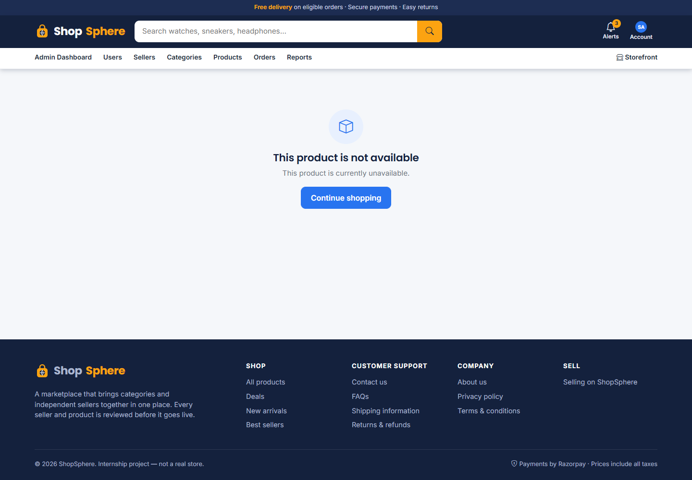
A product can be reactivated only while its category is active. If the category was deactivated, edit the product and choose an active category first.
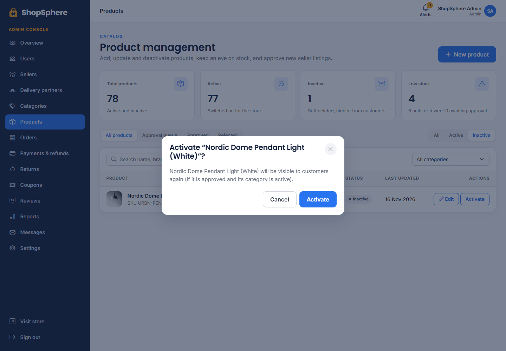
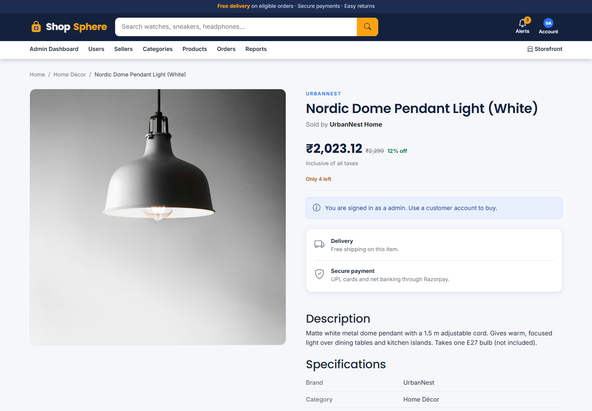
Sellers can also list products for their own store from the Seller studio. Those listings wait in Approval queue until an admin reviews them: click Review, check the listing, then Approve (it goes live) or Reject… with a reason that the seller sees. Products added by an admin skip this step.
| Situation | Message shown | What to do |
|---|---|---|
| A required field is empty or too short | e.g. Product name must be 2-150 characters, Choose a category, Price must be at least ₹1 | Fill in the field shown in red (Figure 5) |
| No store chosen | Choose the store that sells this product | Pick an approved store |
| SKU already used by another product | SKU … is already in use. | Enter a different SKU (Figure 14) |
| SKU with spaces or symbols | SKU must be 3-60 letters, numbers, - or _ | Use letters, numbers, - or _ only |
| Inventory count negative, decimal or over 100000 | Enter a whole number from 0 to 100000 | Correct the number |
| Discount above 90% | Discount must be 0-90% | Lower the discount |
| Image is not JPG, PNG or WEBP, or larger than 5 MB | Choose a JPG, PNG or WEBP image. / Images must be 5 MB or smaller. | Pick a smaller or different image |
| Moving a product into an inactive category | The selected category is inactive. | Choose an active category |
| Adding a product to a store that is not approved | Products can only be added to an approved, active store. | Approve the store first (Admin → Sellers) |
| Activating a product whose category is inactive | This product's category is inactive. Edit the product and choose an active category first. | Edit the product's category, then activate |
| A customer or seller calls an admin product API | HTTP 403 — You do not have permission to access this resource | Only admins can manage products here |
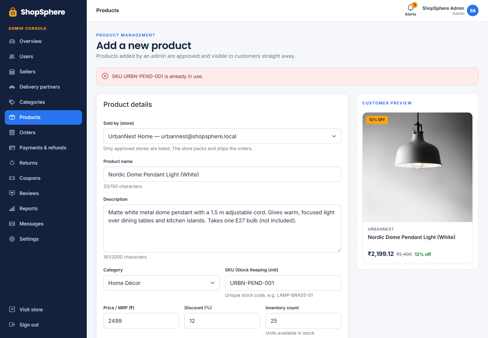
Why can't I delete a product permanently? Orders, invoices, reviews and reports point to it. Deactivating hides it from customers while keeping that history correct.
I deactivated a product by mistake. Click Inactive, then Activate in its row. Nothing was lost.
Why does a product added by the admin not need approval? The admin is the person who approves products, so it goes live at once. Seller listings still go through the approval queue.
Why must I choose a store? ShopSphere is a multi-vendor marketplace: every product is packed and shipped by a store, which receives the orders.
The stock number is red. The product has 5 units or fewer (or none). Update the inventory count when new stock arrives.
The page says "Something went wrong" or keeps loading. The backend server may be starting. Wait a minute and click Try again.
I was signed out. The sign-in lasts one day. Sign in again with the admin account.
Figures 1–14 above were taken from the complete application running locally: the React frontend on http://localhost:5173, the Spring Boot backend on http://localhost:8080 and the MySQL database ecommerce_intern. Each figure follows one product, Nordic Dome Pendant Light (White), through the module: it is added (Figures 4–6), updated (Figures 7–8), deactivated with a warning (Figures 9–11), reactivated (Figure 12) and shown to customers (Figure 13).
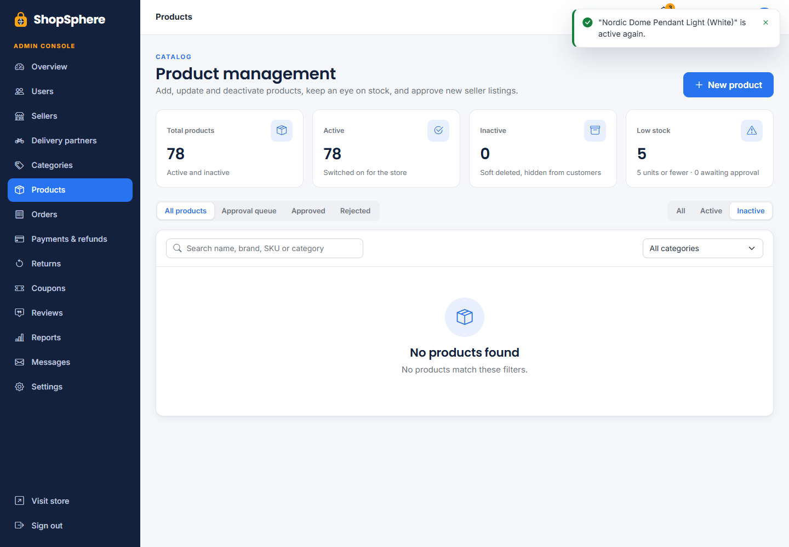
The module stores its data in the MySQL table products. Products link to the category through products.category_id and to the store through products.seller_id.
| Assignment column | Assignment type | ShopSphere column and type | Meaning |
|---|---|---|---|
| product_id | int (pk, auto_increment) | product_id BIGINT, primary key, auto increment | Unique identifier for each product |
| product_name | varchar(150) | product_name VARCHAR(150) | Name of the product |
| description | varchar(500) | description VARCHAR(2000) | Detailed description (longer limit so full product details fit) |
| price | decimal(10,2) | price DECIMAL(12,2) | Product price (MRP) |
| SKU | varchar(50) | sku VARCHAR(60), unique | Unique stock-keeping identifier |
| category_id | int (fk) | category_id INT, foreign key → categories | The product's category |
| inventory_count | int | stock_quantity INT | Number of items available in stock |
| created_at | datetime | created_at DATETIME(6) | When the product was created |
| updated_at | datetime | updated_at DATETIME(6) | When the product details were last updated |
| status | boolean | active BIT(1) | 1 = active, 0 = inactive (soft delete) |
Extra columns used by the marketplace: seller_id (the store), brand, discount_percent and selling_price (price after discount), image_url, approval_status and rejection_reason (seller listings), rating_average, rating_count and sold_count.
The full, tested set is in DataBase/queries.sql, section 7.
-- Add a new product (admin-added products are approved straight away) INSERT INTO products (product_name, description, sku, brand, price, discount_percent, selling_price, stock_quantity, active, category_id, seller_id, approval_status, rating_average, rating_count, sold_count, created_at, updated_at) VALUES ('Nordic Dome Pendant Light (White)', 'Matte white metal dome pendant ...', 'URBN-PEND-001', 'UrbanNest', 2499.00, 12, 2199.12, 25, b'1', 21, 4, 'APPROVED', 0, 0, 0, NOW(6), NOW(6)); -- Product dashboard: every product with category, store, price, stock and status SELECT p.product_id, p.product_name, p.sku, c.category_name, u.store_name, p.price, p.selling_price, p.stock_quantity AS inventory_count, IF(p.active, 'Active', 'Inactive') AS status, p.updated_at FROM products p JOIN categories c ON c.category_id = p.category_id JOIN users u ON u.user_id = p.seller_id ORDER BY p.created_at DESC LIMIT 10 OFFSET 0; -- Summary cards SELECT COUNT(*) AS total, SUM(active = b'1') AS active, SUM(active = b'0') AS inactive, SUM(active = b'1' AND stock_quantity <= 5) AS low_stock FROM products; -- Update product details: price, description, inventory count and category UPDATE products SET price = 2299.00, discount_percent = 12, selling_price = 2023.12, description = 'Matte white metal dome pendant ...', stock_quantity = 4, category_id = 21, updated_at = NOW(6) WHERE product_id = 79; -- Deactivate (soft delete) and reactivate UPDATE products SET active = b'0', updated_at = NOW(6) WHERE product_id = 79; UPDATE products SET active = b'1', updated_at = NOW(6) WHERE product_id = 79;
The IDs (category 21 = Home Décor, seller 4 = UrbanNest Home, product 79) are the ones in the local database used for the screenshots.
All endpoints are under /api/admin and need an admin's JWT (Authorization: Bearer <token>).
| Method | Path | Purpose |
|---|---|---|
| GET | /admin/products?search=&categoryId=&approval=&active=&page=&size= | Product dashboard list. active=true|false filters by status |
| GET | /admin/products/summary | Total, active, inactive, low-stock and awaiting-approval counts |
| GET | /admin/products/{id} | One product, for the edit form |
| POST | /admin/products | Add a product: { "sellerId": 4, "product": { productName, description, sku, price, discountPercent, stockQuantity, categoryId, brand, imageUrl } } |
| PUT | /admin/products/{id} | Update product details |
| PATCH | /admin/products/{id}/status | Deactivate {"active": false} or reactivate {"active": true} |
| PATCH | /admin/products/{id}/approve, /reject, /category | Approval queue and moving a product to another category |
Tests: ProductServiceImplAdminTest checks that admin-added products are approved and active, that unapproved stores and duplicate SKUs are refused, that updates change price, stock and category without resetting approval, that inactive categories are refused, that deactivation never deletes the row, and that reactivation needs an active category.